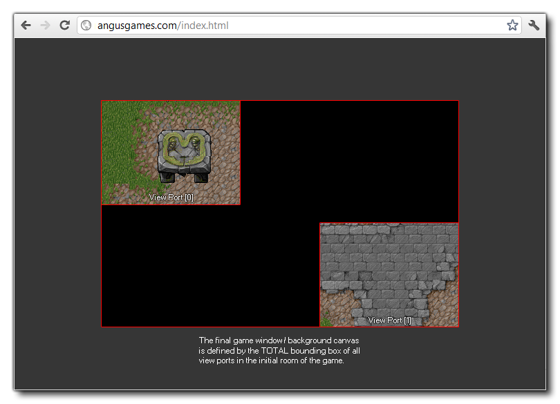

When creating rooms in GameMaker Studio 2 you need to set up different view ports and/or cameras to control what is displayed to the player. The view ports are, basically, little windows into your game world that enable you to show the player parts of a room, either scaled or 1:1, and as such they are essential when your game room is larger than the display size. The cameras are what define exactly what will be shown in each view port.
GameMaker Studio 2 permits you 8 independent view ports (numbered from 0 - 7) and an unlimited number of cameras, of which only 8 can be active at any one time - one assigned to each of the available ports - although normally you'll only need one or two view ports. Cameras can show different parts of the same room and can be activated and deactivated as well as assigned to view ports at any time, meaning that you can use cameras to draw HUD elements or to have split screen effects, or to create cut-scenes for example. Essentially, you position a camera within a room and define the "view" (area) of the room that will be visible to it, and then this view is drawn to a view port - note that the view port can be a different size to the camera view and as such you can distort and scale the camera view if it is a size other than 1:1 with the view port.

If you are adding cameras through the Room Editor then you can retrieve their camera ID value using the view_camera variable. You can then manipulate the view using the functions below and you can even destroy the default cameras if required, although you will need to assign a new camera to the view otherwise you will get some very unpredictable behaviour. Cameras added to a view port in the Room Editor are global in scope, meaning that they are created once when you start the game, and then as you enter each room they are set to the values set in the room editor, so if you destroy a default camera in any room, it will cease to exist for all rooms.
Something to note about cameras and view ports is that the total area of the bounding box for all active view ports in the first room of the game is what defines the background canvas size (or window size for MacOS, Ubuntu (Linux) and Windows), and any areas that are not covered by a view port will default to drawing using the window colour as illustrated by the image below: 
You should take care when using multiple cameras as the draw event for all instances is called once for each visible view, so if you have three camera views active in one room, the draw event will be run three times every step (basically doing three times the work) which can be a cause for slowdown if the game is large or complex. The view_current variable can be used to help limit these draw calls however by checking which view is being drawn and only drawing items that are specific to a given view port. Also be careful when creating your own cameras, as if you create one in a room and don't remove it using the camera_destroy() you can get a memory leak.
You can find an overview of all the available functions from the different sections below, but it's worth noting that some of these functions require the setting up and use of different matrices, so you may want to look at the section of the manual for the Matrix Functions. Also note that there are a few room functions that can be used to get and set cameras and view port values in rooms other than the current one (see Creating And Changing Rooms).
- camera_get_view_mat
- camera_get_proj_mat
- camera_get_update_script
- camera_get_begin_script
- camera_get_end_script
- camera_get_view_x
- camera_get_view_y
- camera_get_view_width
- camera_get_view_height
- camera_get_view_speed_x
- camera_get_view_speed_y
- camera_get_view_border_x
- camera_get_view_border_y
- camera_get_view_angle
- camera_get_view_target
- camera_get_default
- camera_get_active
When working with cameras, you have to assign them to a view port
for them to be "active" and display anything. These view ports are
numbered from 0 to 7 and can be changed and positioned using
different variable arrays and functions, and you can also check to
see which one is currently drawing or which camera is currently
attached to it.